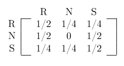
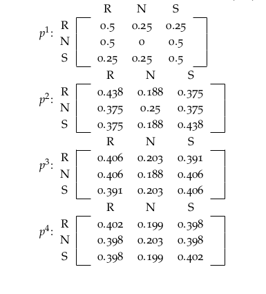
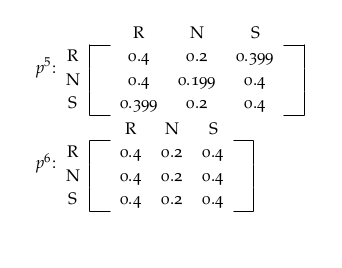
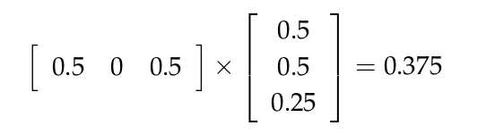
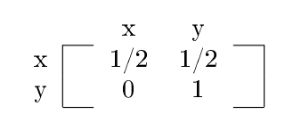
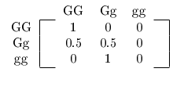
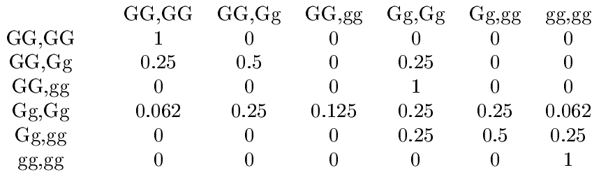

Markov Chains and Gene Prediction #1: A Basic Introduction
If you can access Medium, read the article from here.
I recently started teaching a probability course in the lab for the interns, and it reminded me of so much stuff that I have been curious about not so long ago, one of those things were Markov Chains and how interesting they actually are, and obviously since I, along with a coworker named Rakabawi, share an interest in theoretical biology, we have decided that in our free time, the time not spent in doing research on blockchains, we would do some biology-related research.
Anyway, let me first introduce to Markov Chains, a Markov chain is discrete-time stochastic process; a process which can take different states with certain probabilities of being in each -or none- of going in the next step, or several steps, to a different state, or getting stuck in the same state. More terminology to be introduced as we go on.
Formally, A Markov chain has a set of states, S = { s1, s2, …}. The process starts in one of these steps and moves successively from one state to another. If the process is currently in state i, the probability of it going to state j, is denoted by Pi,j, or the element i,j in the current transition matrix. So what is a transition matrix?Let’s first explore an example by Kemeny, Snell, and Thompson, which describes the Land of Oz, in which weather can only take three states: rainy, nice or snowy, with a condition that the city can’t have two nice in a row. The initial transition matrix, or P1 can be given by:
which is quite simple and straight-forward, a mapping of conditional probabilities that maps state j given i, but just in case, the first element in the array denotes the conditional probability that “tomorrow” is going to be rainy given that “today” was rainy, and so on.
But obviously that’s not all that you need to know about Markov chains, but some concepts will suffice for now, but first, notice the following transitions
 You can obviously see that after each transition the probability is approaching the probabilities of the 6th transition.
But wait, how do we even generate a transition other than the initial? To better understand this, let’s first say that the probability that 2 days from now it is going to be raining, given that today’s weather is nice, is the disjoint union of three probabilities, which are: the probability that the weather two days from now is going to be rainy given that tomorrow’s weather is nice, the the probability that the weather two days from now is going to be rainy given that tomorrow’s weather is rainy, and the probability that the weather two days from now is going to be rainy given that tomorrow’s weather is snowy. Right? It’s easier than it looks, and actually be generated in a single computation, but it needs to be illustrated more clearly beforehand.
First, the probability that it will be nice two days from now given that it was nice today is given by:
or the dot product of the second row (the one denoting the probabilities of tomorrow’s weather given that today’s is nice) by the first column (the one denoting the probability of the day after being rainy given the current day’s different state probabilities)
An important concept keep in mind, is a regular chain, any transition matrix that has no zeroes determines a regular Markov chain. Remember our Land of Oz example? It started with an initial transition matrix which contained a zero, yet it is regular. How? Because later on that zero value changed.
Now, what the hell is an absorbing chain? It is one in which you can be trapped in one state with absolutely no possibility of transitioning into a different state once you’re in that state. An example is the following.
Once you transition from x to y, there’s no way of getting back to x.
Finally for now, let P be the transition matrix for a regular chain. Then as n approaches infinity, the powers P^n approach a limiting matrix W with all rows the same vector w. The vector w is composed of strictly positive probabilities that always sum up to one. The proof of such is left for you (not as an exercise, LOL).
Now, let’s get to the good stuff. The simplest type of inheritance of traits in animals occurs when a trait is governed by a pair of genes, each of which may be of two types, say G and g. An individual may have a GG combination or Gg (which is genetically the same as gG) or gg. Very often the GG and Gg types are indistinguishable in appearance, and then we say that the G gene dominates the g gene. An individual is called dominant if she has GG genes, recessive if she has gg, and hybrid with a Gg mixture.
In the mating of two animals, the offspring inherits one gene of the pair from each parent, and the basic assumption of genetics is that these genes are selected at random, independently of each other. Say the initial transition matrix P of that chain is as follows:
That chain was built such that the oldest offspring is mated with a dominant individual.
A more advanced example would be if we pick two animals of the opposite sex, mate them, and select two of their opposite-sex offsprings, and mate those, and so on. Let’s first start with stating the different states, say the first of which is (GG,GG), dominant, dominant, and let s2 = (GG, Gg), s3= (GG,gg), s4= (Gg, Gg), s5= (Gg, gg), and s6 = (gg,gg), which can be illustrated in the following transition matrix:
So, that’s it for now. I think you have enough concepts for the following article in which I’ll discuss more elaborately and with more advanced examples how you can use Markov chains for genetic prediction.